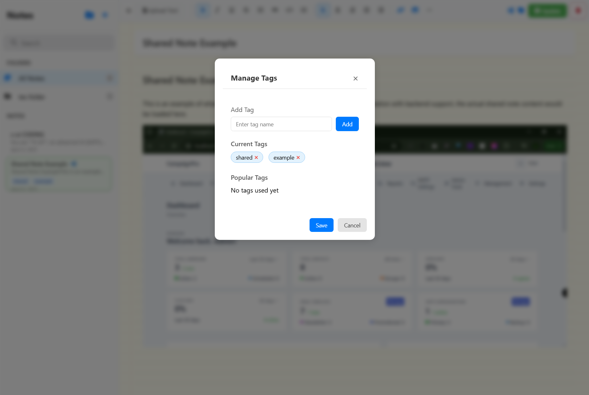
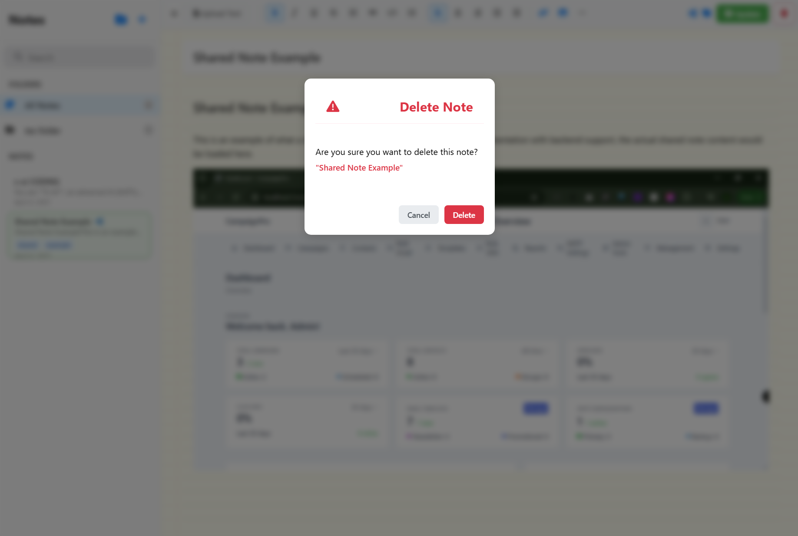
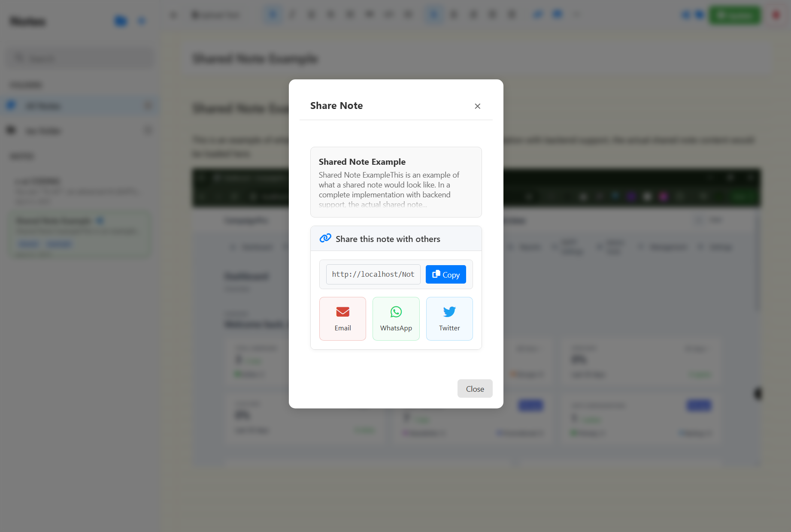

NotePad Documentation
A modern, responsive web application for efficient note-taking and organization.
NotePad is designed to provide a seamless note-taking experience with a focus on usability and performance. The application combines powerful features with an intuitive interface, making it suitable for both casual users and power users.
Technical Overview
- Built with vanilla JavaScript for optimal performance
- Responsive design using CSS Grid and Flexbox
- Local storage with IndexedDB for offline capability
- Real-time synchronization across devices

The main interface showing the sidebar, note list, and editor with example content.
Core Features
Rich Text Editing
Our rich text editor provides a comprehensive set of formatting tools while maintaining a clean, distraction-free interface. The editor supports keyboard shortcuts and includes an innovative floating toolbar for quick access to common formatting options.
Implementation Details:
- Custom-built WYSIWYG editor
- Support for markdown shortcuts
- Auto-save with version history
- Undo/redo functionality

- Format text (bold, italic, underline)
- Multiple heading levels
- Lists and checkboxes
- Real-time autosave
Note Management
The note management system is built for scalability, allowing users to organize thousands of notes efficiently. The hierarchical folder structure supports nested folders and provides powerful batch operations for managing multiple notes simultaneously.
Key Components:
- Tree-based folder structure
- Drag-and-drop interface
- Bulk operations support
- Advanced sorting options

- Create unlimited folders
- Drag and drop notes
- Export folder contents
- Bulk operations
Smart Search
The search system uses advanced algorithms to provide instant, relevant results. It includes fuzzy matching and remembers your search patterns to improve future searches. The system also supports advanced filters and boolean operators.
Search Features:
- Full-text search with highlighting
- Tag-based filtering
- Search history and suggestions
- Regular expression support

- Real-time search results
- Search in titles and content
- Advanced filtering options
Advanced Features
Tag Management
- Create and manage tags
- Tag-based organization
- Smart tag suggestions
- Bulk tag operations
Safe Delete Operations
- Confirmation dialogs
- Batch delete support
- Recover deleted notes
- Permanent deletion option
Sharing Features
Share Interface
- Multiple sharing options
- Social media integration
- Email sharing
Link Sharing

- Generate shareable links
- Link management
- Access control
Mobile Experience
Advanced Mobile View

- Optimized mobile layout
- Touch-friendly controls
- Gesture support
Mobile Notes View

- Quick note access
- Floating action buttons
- Offline capabilities